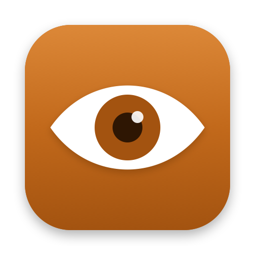

See why your Mac won't sleep.
bAwake is a small macOS menu bar app that shows what is keeping your Mac awake, and keeps it awake while your AI agents and builds work. Free, from Berni Software.
What it does
Inspector
Every process keeping your Mac awake right now, with the reason it gave.
Agents and builds
Detects Claude Code, Codex, Gemini CLI, Aider, xcodebuild, npm, cargo and more. Stays awake until they finish and tells you when they need you.
Sleep history
A timeline of each night: when your Mac slept, woke, and what kept it up.
Sessions
Awake for 15 minutes, an hour, four hours or until you turn it off, with the equivalent caffeinate command.
Rules
Stay awake on your Wi-Fi networks, on the power adapter, with an external display, or during a Focus.
Shortcuts and Siri
“Keep my Mac awake with bAwake.” Start, stop and check bAwake from Shortcuts, Siri, Spotlight or the Action button.
Lid closed and safety
Optionally stays awake with the lid closed. Lets the Mac sleep when the battery runs low or it gets too hot.
Install
Homebrew
brew install --cask bernisoftware/tap/bawake
Command line, included in the app
bawake -- npm run build bawake --for 2h bawake status
Made by Berni Software
Berni Software builds apps, systems and IT solutions in Porto Alegre, Brazil, since 2013. We made bAwake for the way we work with AI agents every day, and we share it free with the community.